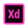

Soy Marianella Gottig, desde que tengo memoria siempre senti un gran interes hacia las ciencias y la tecnologia. Actualmente me encuentro trabajando en el area IT como Programadora Jr .NET y cursando la Tecnicatura Superior en Programacion en la Universidad Tecnologica Nacional.
Mis expectativas a futuro son poder seguir aprendiendo y profesionalizandome en lo que hago para poder dar los mejores resultados.
El programa tiene como objetivo mantener un registro de las Armas que se solicitan en un Poligono de Tiro, asi mismo tambien cuenta con la posibilidad de registrar usuarios y poder tener un seguimiento del estado actual de cada uno de los socios del Poligono.
Lenguaje: C++
El programa tiene como objetivo mantener un seguimiento de los Articulos que se registran en el mismo.
Cuenta con la posibilidad de visualizar el Stock disponible, la Marca y Categoria a la que pertenezcan, modificar y/o dar de baja un articulo.
Lenguaje: C#